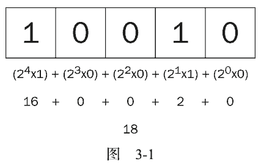

位操作符用于在最基本的层次上，即按内存中表示数值的位来操作数值。 ECMAScript 中的所有数值都以 IEEE-754 64 位格式存储，但位操作符并不直接操作 64 位的值。而是先将 64 位的值转换成 32 位的整数，然后执行操作，最后再将结果转换回 64 位。对于开发人员来说，由于 64 位存储格式是透明的，因此整个过程就像是只存在 32 位的整数一样。
对于有符号的整数， 32 位中的前 31 位用于表示整数的值。第 32 位用于表示数值的符号： 0 表示正数， 1 表示负数。这个表示符号的位叫做符号位，符号位的值决定了其他位数值的格式。其中，正数以纯二进制格式存储， 31 位中的每一位都表示 2 的幂。第一位（叫做位 0）表示 20，第二位表示 21，以此类 推 。 没 有 用 到 的 位 以 0 填 充 ， 即 忽 略 不 计 。 例 如 ， 数 值 18 的 二 进 制 表 示 是00000000000000000000000000010010，或者更简洁的 10010。这是 5 个有效位，这 5 位本身就决定了实际的值（如图 3-1 所示）。
0000 0000 0000 0000 0000 0000 0001 0010然后，求其二进制反码，即 0 和 1 互换：
1111 1111 1111 1111 1111 1111 1110 1101最后，二进制反码加 1：
var num = -18; alert(num.toString(2)); // "-10010"
要把数值-18 转换成二进制字符串时，得到的结果是"-10010"。这说明转换过程理解了二进制补码并将其以更合乎逻辑的形式展示了出来。
默认情况下， ECMAScript 中的所有整数都是有符号整数。不过，当然也存在无符号整数。对于无符号整数来说，第 32 位不再表示符号，因为无符号整数只能是正数。而且，无符号整数的值可以更大，因为多出的一位不再表示符号，可以用来表示数值。
在 ECMAScript 中，当对数值应用位操作符时，后台会发生如下转换过程： 64 位的数值被转换成 32位数值，然后执行位操作，最后再将 32 位的结果转换回 64 位数值。这样，表面上看起来就好像是在操作 32 位数值，就跟在其他语言中以类似方式执行二进制操作一样。但这个转换过程也导致了一个严重的副效应，即在对特殊的 NaN 和 Infinity 值应用位操作时，这两个值都会被当成 0 来处理。
如果对非数值应用位操作符，会先使用 Number()函数将该值转换为一个数值（自动完成），然后再应用位操作。得到的结果将是一个数值。
var num1 = 25; // 二进制 00000000000000000000000000011001 var num2 = ~num1; // 二进制 11111111111111111111111111100110 alert(num2); // -26运行一下
var num1 = 25; var num2 = -num1 - 1; alert(num2); // "-26"虽然以上代码也能返回同样的结果，但由于按位非是在数值表示的最底层执行操作，因此速度更快。
var result = 25 & 3; alert(result); //1运行一下
25 = 0000 0000 0000 0000 0000 0000 0001 1001 3 = 0000 0000 0000 0000 0000 0000 0000 0011 --------------------------------------------- AND = 0000 0000 0000 0000 0000 0000 0000 0001原来， 25 和 3 的二进制码对应位上只有一位同时是 1，而其他位的结果自然都是 0，因此最终结果等于 1。
var result = 25 | 3; alert(result); //2725 与 3 按位或的结果是 27：
25 = 0000 0000 0000 0000 0000 0000 0001 1001 3 = 0000 0000 0000 0000 0000 0000 0000 0011 -------------------------------------------- OR = 0000 0000 0000 0000 0000 0000 0001 1011这两个数值的都包含 4 个 1，因此可以把每个 1 直接放到结果中。二进制码 11011 等于十进制值 27。
var result = 25 ^ 3; alert(result); //26运行一下
25 = 0000 0000 0000 0000 0000 0000 0001 1001 3 = 0000 0000 0000 0000 0000 0000 0000 0011 --------------------------------------------- XOR = 0000 0000 0000 0000 0000 0000 0001 1010这两个数值都包含 4 个 1，但第一位上则都是 1，因此结果的第一位变成了 0。而其他位上的 1 在另一个数值中都没有对应的 1，可以直接放到结果中。二进制码 11010 等于十进制值 26（注意这个结果比执行按位或时小 1）。
var oldValue = 2; // 等于二进制的 10 var newValue = oldValue << 5; // 等于二进制的 1000000，十进制的 64运行一下
var oldValue = 64; // 等于二进制的 1000000 var newValue = oldValue >> 5; // 等于二进制的 10 ，即十进制的 2运行一下
>>>）表示，这个操作符会将数值的所有 32 位都向右移动。对正数来说，无符号右移的结果与有符号右移相同。仍以前面有符号右移的代码为例，如果将 64 无符号右移 5 位，结果仍然还是 2：var oldValue = 64; // 等于二进制的 1000000 var newValue = oldValue >>> 5; // 等于二进制的 10 ，即十进制的 2运行一下
但是对负数来说，情况就不一样了。首先，无符号右移是以 0 来填充空位，而不是像有符号右移那样以符号位的值来填充空位。所以，对正数的无符号右移与有符号右移结果相同，但对负数的结果就不一样了。其次，无符号右移操作符会把负数的二进制码当成正数的二进制码。而且，由于负数以其绝对值的二进制补码形式表示，因此就会导致无符号右移后的结果非常之大，如下面的例子所示：
var oldValue = -64; // 等于二进制的 11111111111111111111111111000000 var newValue = oldValue >>> 5; // 等于十进制的 134217726运行一下